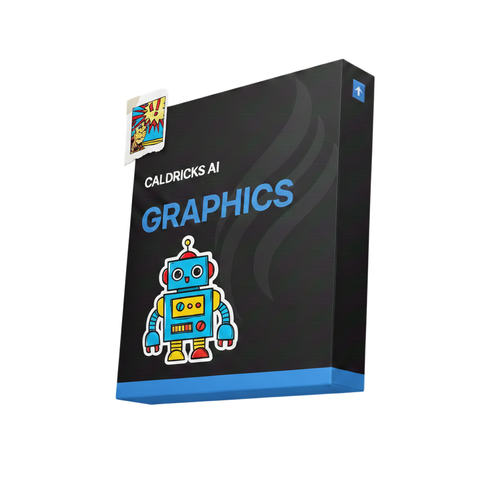

Workings of AI Image Generation
A structured premium guide by Caldricks Institute of Artificial Intelligence explaining how modern generative AI systems create images using diffusion models.
Buy Now $299

A structured premium guide by Caldricks Institute of Artificial Intelligence explaining how modern generative AI systems create images using diffusion models.
Buy Now $299Learn diffusion processes, noise scheduling, latent space mapping, prompt conditioning, and real-world AI image generation workflows. .Foundations of Image Generation How AI learns visual patterns from data Pixel space vs latent space Noise modeling and probability basics .Diffusion Models (Core Concept) Forward diffusion (adding noise step-by-step) Reverse diffusion (denoising process) Why diffusion creates high-quality images Sampling steps and inference flow .U-Net Architecture (Heart of Image Generation) Encoder–Decoder structure Skip connections and why they matter Downsampling & upsampling blocks Feature extraction at multiple resolutions How U-Net predicts noise instead of images .Conditioning & Prompt Understanding Text embeddings and CLIP integration How prompts influence image structure Classifier-free guidance (CFG) explained simply .Latent Diffusion Why images are generated in latent space Speed, memory, and quality advantages Difference between pixel diffusion and latent diffusion .Training Pipeline Dataset preparation Loss functions (MSE explained intuitively) Optimization and convergence Hardware and compute requirements .Inference & Image Control Seed, steps, guidance scale Resolution handling Image-to-image and inpainting concepts